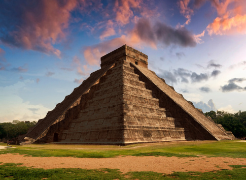
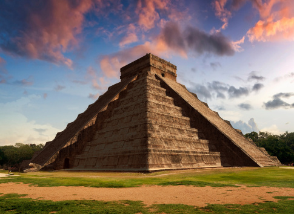

Diez motivos para viajar a México
-
Playas inigualables :
Aguas cristalinas arena blanca, fauna marina increible.
-
Sitios arqueológicos:
Las mas facinantes culturas milenarias, Los templos como el de Kukulcan considerado una de las maravillas del mundo.
-
Aventura:
Podes realizar muchos recoridos unicos que implican deztreza como rafting o tirolesa en un Cenote.
Cultura y tradiciones únicas:
Se encuentran fuciones entre el legado aborigen y español una de las festividades mas reconocidas el Dia de los Muertos.
Gastronomía que enamora:
Los Tacos, el Pozole, el Mole entre otras delicias
Gente cálida:
Es un lugar para hacer amigos ya que es un pueblo alegre y dispuesto a socializar.
Pueblos Mágicos:
Bellezas naturales e historicas como en Tulum, Valle Bravo o Tepoztlán.
Artesanías:
Sarapes, Sombrero de Charro, Arte Huichol coloridos tejidos, entre otras maravillas realizadas a mano.
Fiestas:
con ciudades únicas donde no se detienen.
Belleza única:
Ya que combina todos los elementos antes mencionados Naturaleza, Historia, Cultura, Gastronomía.

 
